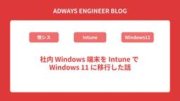

Adwaysエンジニアブログ
https://blog.engineer.adways.net/
adwaysエンジニアブログ
フィード

社内 Windows 端末を Intune で Windows 11 に移行した話
Adwaysエンジニアブログ
こんにちは。アドウェイズでヘルプデスク業務を担当しているヘルプデスクオペレーターの佐々木です。 今回は、社内の Windows 端末を Microsoft Intune で管理しながら、Windows 10 から Windows 11 へ移行した際の進め方を振り返ります。 すでに Windows 10 のサポート終了を迎えているため、いま読むと少しタイミングが遅いテーマに見えるかもしれません。 この記事では、これから移行するための手順というより、数百台規模の端末移行を Intune でどのような方針で、どのような順番で進めたのかを振り返る内容としてまとめます。情シスやヘルプデスク、社内端末の管…
4日前

それでも意思決定は、人間の仕事だ
Adwaysエンジニアブログ
こんにちは、りょーまです。プロダクト開発組織でマネージャーをしています。 今回は、AI時代における意思決定について考えてみます。 DeepResearchの衝撃と、ある違和感 1年ほど前でしょうか。初めてDeepResearchに触れたときは、本当に衝撃的でした。 ものの数分で自分が知りたいことに対して、網羅的かつ精度の高いレポートが出てくる。 「リサーチはもう全部これでいいじゃん」と、素直にそう思ったことを覚えています。 ところが、何度か使っていくうちに、ある違和感を覚えます。 リサーチ結果がまったく役に立たないときがある。同じツールなのに、この差は何だろうと。 振り返ってみると、リサーチ対…
10日前
/opsx:apply 以降を完全放置でPR作成までやってくれるスキルを作った
Adwaysエンジニアブログ
はじめに ADWAYS DEEE 技術改善Div 第一ユニットでシニアアプリケーションエンジニアをやっている市橋です。 今回はOpenSpecのapplyフェーズを自律駆動するスキルを作ってみた話をします。 チームでのClaude Code活用を促進したい方々の参考になれば幸いです。 弊社エンジニアのLLM利用環境 ADWAYS DEEEではClaude Code Maxプランが 全エンジニアに 配布されています。 また、SDD（Spec-Driven Development: 仕様駆動開発）についても検証を進めており、SDDを実践するためのフレームワークであるOpenSpecの導入にチャレン…
12日前
「資格なんて意味ない」を覆した、新卒1年目でAWS SAPまで取得してチャンスを掴み取った話
Adwaysエンジニアブログ
こんにちは！広告事業本部でアプリケーションエンジニアをしている25新卒の佐々木です！ エンジニアの新卒1年目は、勉強しないといけないことが無限にあるし、周りのチームメンバーから信頼を得るのが大変ですよね... そんな中、私は新卒1年目の間に、AWSの資格を3つ（CLF → SAA → SAP）取得することで、周りからの評価とできる仕事の幅が変化したと感じました。 そこで、「資格なんて取る意味あるの？」「資格の勉強の仕方を知りたい！」という方にぜひ見ていただければ嬉しいです。 資格を取ろうと思った理由 AWSの資格について 受験スケジュール 勉強方法 受験結果 辛かったこと 資格をとったことで変…
17日前
AWSマルチアカウント横断のインフラ情報をAIで分析 -- EOL対応の経験から生まれたMCPサーバー構築
Adwaysエンジニアブログ
はじめに こんにちは、技術本部、技術戦略ディビジョン VGM の天津です。 社内横断的なSREチームで、 現在は主にEOL対応および保守に役立つプラットフォームの拡充・エンジニアリングに取り組んでいます。 今回は、EOL対応およびインフラ調査の効率化を目的に構築した、インフラ情報をAIに提供する仕組み ――愛称「a2m」（aws analysis mcp）―― について紹介します。 はじめに 背景 -- EOL対応で感じた問題点 あるべき姿と現実のギャップ 課題への解決策 1. データ整備 2. AIとの連携基盤（MCPサーバー） AWS公式MCPとの違い システム全体像 サーバーレス構成を選…
25日前
AI時代の品質担保に向けて考えていること
Adwaysエンジニアブログ
こんにちは。ADWAYS DEEEで開発・運用業務を行っているリードアプリケーションエンジニアのまっちゃん（@honyanyas）です。 最近はAIの発展が著しく、私たちの開発環境やプロセスも大きく変わりつつあります。 AIを使うことで確実に実装スピードは上がるものの、コードレビューなどの品質担保のプロセスが追いつかないことも多くなっています。 AIをコントロールできなければ、品質が下がるどころか、むしろ全体のリードタイムも上がってしまう可能性があります。 本日はAI時代の品質担保のために、組織の一エンジニアが考えていることを簡単に書き出してみます。 AIを使った開発経験 バイブコーディングで…
1ヶ月前
kintoneの仕様確認をチャット化！ n8n × RAGでチーム用のAIチャットを構築してみた
Adwaysエンジニアブログ
こんにちは、広告事業本部でクライアントの受発注システムを担当しているリードアプリケーションエンジニアの花田です。 日々の業務の中で「あのアプリの仕様はどうなっていたか」「このJSはどう動くか」といったkintoneの仕様確認に意外と工数を取られていませんか？ 今回は、iPaaSツールのn8nを用いてRAG（検索拡張生成）環境を構築し、kintoneの膨大な仕様をスムーズに確認できるAIチャットを作成しました。 実装の過程で工夫したポイントなどをまとめましたので、皆様の業務効率化のヒントになれば幸いです。 はじめに 用語集 完成！ kintone仕様確認チャット 開発環境 チャットでできること …
1ヶ月前
アドウェイズにおけるゼロトラスト実現への歩み
Adwaysエンジニアブログ
こんにちは！アドウェイズ技術本部の遠藤です。 現在は技術本部という横断的な組織で幅広くマネジメントを行っています。本記事では、私がこれまで軸としていたコーポレートエンジニアリング領域の歩みと、それを担うインフラストラクチャーDivの社内チームの取り組みについてご紹介したいと思います。 アドウェイズが明確にゼロトラストセキュリティモデルを目指して動き出したのは2022年頃です。その理由はいくつかありますが、特に大きかったのは、コロナ禍による柔軟な働き方を確保しつつ、インターネット上の機密情報をいかに守るかという点でした。 また、2023年の本社移転というビッグイベントを見据え、ネットワーク環境を…
1ヶ月前
Claude CodeプラグインでAI駆動開発を組織の共有知に ─ 組織で育てるClaude Codeプラグインマーケットプレイス
Adwaysエンジニアブログ
こんにちは、ADWAYS DEEE技術改善ディビジョンのGMをしている岡村です。 皆さんはAIコーディングエージェントを使っていますか？ 弊社アドテク・技術改善では自分を含めたテクニカルマネージャー陣が先行してClaude Codeの検証を進め、2025年夏の終わりにはClaude Codeの全エンジニア導入を決めました。 今回は、Claude Code の「プラグイン」機能を活用して、AI開発の知見を組織全体で共有できる仕組み ── プラグインマーケットプレイスを構築した話をお伝えします。 きっかけ：個別の知見が共有知になりづらい問題 Claude Codeの活用を進めるにつれ顕在化してきた…
2ヶ月前
初めてのクラウド系ベンダー資格としてGoogle Cloud Associate Data Practitioner を取ってみました
Adwaysエンジニアブログ
こんにちは！ADWAYS DEEEでアプリケーションエンジニアをしている渡辺です！ 今回は自分が初めてGoogle Cloudの認定資格を取ったのでその体験記を書きたいと思います。 本記事の対象 Google CloudやAWSの認定資格をこれから取ってみようかなという方 Associate Data Practitionerを取ろうと思っている方 今回の記事であまり対象じゃない人 既に認定資格を取った経験がある人 初めて受けた視点での話をするので既に受験の経験がある人にとっては当たり前の内容になると思います。ご了承を！ TL;DR Associate Data Practitioner(AD…
2ヶ月前
チーム向上会を実施してみた
Adwaysエンジニアブログ
こんにちは/こんばんは、技術本部 インフラストラクチャーDivでマネージャーをしている矢吹です。 前回書いてから2年経っていて驚きました。子供も2歳になり、いたーす・ごちそうしたを覚えました。 はじめに チーム向上会の開催 どんなことをやっているのか クイズ◯◯(個人名)の35のこと チームメンバーからの感想 ユニットに求められていること&大事だと思うこと ユニットに求められていること ユニットとして大事だと思うこと モチベーション研究会 チームメンバーからの感想 最後に はじめに 働く上で主要な3つの要素として以下のようなものがあると思いますが、個人的には働くモチベーションとして一番大事にし…
2ヶ月前
【社内発表レポート】仮説思考について
Adwaysエンジニアブログ
新年明けましておめでとうございます！ ADWAYS DEEEで開発・運用業務を行っているリードアプリケーションエンジニアのまっちゃんです。 2026年最初の記事になります。2026年もADWAYSエンジニアブログをよろしくお願いいたします！本日はツキイチで開催されている部署の全体定例において、プロダクトチームを率いるエンジニアリングマネージャーりょーまさんから、『仮説思考』に関する発表がありましたので、そちらについてまとめました。
2ヶ月前
Claude Code を相棒にした新卒エンジニアが、次は AI エージェントに挑戦してみた話
Adwaysエンジニアブログ
こんにちは！ADWAYS DEEE でアプリケーションエンジニアをしている25卒の日置です！ 8月に初めてのエンジニアブログを書いてから早くも数ヶ月が経ち、気づけば年末。時の流れの速さに驚きつつ、今回は2本目のブログを執筆することになりました。 前回は「AI を毛嫌いしていた新卒エンジニアが、Claude Code を相棒にするまでの話」というテーマで、AI に対する価値観の変化についてお話ししました。あれから業務で AI を活用する機会がさらに増え、今では AI エージェントの開発にも携わるようになりました。 今回は、Amazon Bedrock・AgentCore Runtime・Stra…
3ヶ月前
コスト削減完了！！EC2のバッチインスタンスをLambdaに移行する
Adwaysエンジニアブログ
こんにちは、広告事業本部でクライアントの受発注システムを担当しているリードアプリケーションエンジニアの花田です。 前回は「コスパ悪い？ EC2のジョブインスタンスをlambdaに移行する」の記事でLambdaに置き換えました。 今回はコスト削減の最後の作業として、 バッチインスタンスをEC2からLambdaに移行 しました。 blog.engineer.adways.net はじめに LambdaでRDS接続を行ってみよう チュートリアルでRDSに簡単接続 RDS Proxyのコストは高い RDS Proxyは本当に必要？ RDSの接続を行う Lambdaの修正 RDSの接続にはActive …
3ヶ月前
Geminiを活用してEOL調査してみた
Adwaysエンジニアブログ
こんにちは。技術本部 技術戦略ディビジョンでマネージャーをしています、奥村です。 本記事では、Gemini DeepResearch と NotebookLM を組み合わせて、サポート終了（EOL）情報の調査業務を効率化した取り組みを紹介します。 はじめに アプローチの概要 手順1：Gemini DeepResearch で「世の中のEOL情報」を収集 DeepResearch への指示（プロンプト） 結果 手順2：NotebookLM で「自社リソース」と突き合わせ NotebookLM へのインプット 別途作成してあった自社のリソース一覧について 指示内容 検証結果 良かった点 補足：人間…
3ヶ月前
【部署内表彰】「仕様書駆動開発（SDD）」で開発スピード4〜5倍！？実践者に話を聞いてみた
Adwaysエンジニアブログ
こんにちは、アドウェイズエンジニアブログ運営かつADWAYS DEEEでアプリケーションエンジニアをしている渡辺です。 突然ですが、皆さんの会社には「褒め合う文化」ってありますか？ 私の部署では毎月の全体定例で「改善さん変革さん」という表彰をしています。その月に良い動きをしたメンバーを称え、ヒーローインタビューをするという、ちょっと楽しいコーナーです。 実はこのヒーローインタビュー形式自体も、2025年10月から始まった改善の取り組みなんです。以前は受賞者の取り組み内容を読み上げるだけだったのですが、「プロ野球のヒーローインタビューのように、受賞者の取り組みや裏側を掘り下げたい」という想いから…
4ヶ月前
西新宿の中心で、AIをさけぶ
Adwaysエンジニアブログ
・・・ご無沙汰しています。 ADWAYS DEEE アドプラットフォーム事業部でマネジャーをしている、「TD（ともだ）」です。この発表は、僕がAIと出会い、その存在を組織という世界に浸透させるために行った、ある「成果発表会」についての記録です。AIをどう組織に定着させ、文化として育んでいくべきか。その答えを探して彷徨う迷える子羊たちにとって、この記事が暗闇を照らす一筋の光になれば幸いです。
4ヶ月前
n8nをAWS ECS上にセキュアにデプロイして業務自動化を実現した話
Adwaysエンジニアブログ
こんにちは！広告事業本部でクライアントの受発注システムを担当しているアプリケーションエンジニアの石井です。 前回の記事執筆が2024年の6月ということでおよそ1年半ぶりの投稿となります！ 今回はADWAYS DEEEの方でも導入を進めている「n8n」に関してのお話になります。AIによる業務効率化がさまざまな部署から行われる中でその一環として、広告事業本部の各部署でもさまざまなツールの導入・検証が行われております。 「n8nとは何か」や「実際に導入してどう活用しているか」は、上記の記事で紹介されています。 そのため本記事では、「n8nをAWS上の環境でセキュアにデプロイする」といった技術的な話を…
4ヶ月前
50個以上あったGWSテナントを片手で収まる範囲にまでテナント統合をした話とノウハウ話
Adwaysエンジニアブログ
こんにちは。技術本部でSaaSの管理やヘルプデスク対応をしているヘルプデスクオペレーターの戸田です。 今回の内容が、ヘルプデスク向けかというとそんなことは一切ないのでご容赦ください。情シスの業務の一環になるので、GWSの複数テナントに悩む情シス担当者、テナント統合を検討している人の参考になれば幸いです。 またGWSの移行に関する記事は下記の記事があります。 様々な理由でGWSのアカウントやテナントを統合する場合は、これらの記事を参考にすることでより理解が深まると思います。（実際に自分は深まりました） GMOペパボさん Google Workspaceのプライマリドメイン変更を実施しました - …
4ヶ月前
CTOとしてAI導入での開発組織変化を振り返る
Adwaysエンジニアブログ
どうも、ADWAYS DEEEで取締役CTOをしている大曲です。 2025年のエンジニア組織はAIツール導入によって大きな変化をしています。 この記事では、組織の変化を時系列で振り返ってみたいと思います。 はじめに 私たちの組織では、2025年2月から本格的にAI活用に取り組み始めました。 現在、組織全体でのAI活用が進む一方で、まだ解決すべき課題も多く残っています。 この記事が、同じようにAI導入を検討している、あるいは既に取り組んでいる組織の参考になれば幸いです。 前提：私たちの組織について まず、私たちの組織の状況をお伝えします。 プロダクト組織人数は45名程度 エンジニアは30名程度 …
4ヶ月前
【年間で$3,120の削減】 Datadog から CloudWatch への移行で実現したコスパ良の外形監視
Adwaysエンジニアブログ
こんにちは！広告事業本部でユニットマネージャーをやっている上森です。 本記事では、Datadog から CloudWatch への移行によって、月額$300から$40に、約87％のコスト削減に成功した話をご紹介します。 また、外形監視の手段選定に悩んでいる方、現在の監視コストを抑えたい方に向けて、CloudWatch Synthetics というコスパに優れた選択肢をお伝えしようと思います。 背景 私のチームでは直近でサービス運用コストの削減に注力しており、EC2, RDS のスペック適正化や Staging 環境の起動時間の見直しなど、多岐にわたる施策を実施してきました。 詳しい内容は同じチ…
5ヶ月前
Amazon Bedrock AgentCoreで何ができる？新卒エンジニアのワークショップ体験記
Adwaysエンジニアブログ
こんにちは！ADWAYS DEEEに新卒として入社した中西です。配属されてからは主に運用開発業務に携わっています。直近では、担当サービスのデプロイフローの中に、CodeDeployを組み込むプロジェクトを行っていました。配属される前はインフラの知識がほぼゼロの状態からスタートしましたが、最近では苦手意識もなくなり成長できたと感じています！本題ですが、先日アマゾンウェブサービスジャパン合同会社様が開催してくださった、AWSのワークショップに参加させていただきました。弊社のエンジニアが全員参加のものとなり、現地に到着する前は他の企業様とも合同で行うのかと思っていましたが、なんと弊社の貸切で開催されました。ワークショップの内容は直近で一般提供（GA）が開始された、話題の Amazon Bedrock AgentCore に関するものでした。今回はそのワークショップがどのようなものであったかについて話していきます。
5ヶ月前
AWS生成AIハッカソン参加レポート - 生成AIを使ったソリューションアイデアを考えました
Adwaysエンジニアブログ
こんにちは！ADWAYS DEEE（クラウド関連チーム）で開発・運用業務を行っているリードアプリケーションエンジニアのまっちゃん @honyanyas です。数カ月前になりますが、AWS主催の生成AIハッカソンに所属チーム（以下クラウドチーム）で参加してきましたのでその内容を書きます。この記事は所属組織の会議で発表した内容を元に加筆修正したものになります。
5ヶ月前
ワークフロー自動化ツールn8nを使い始めて見えてきたこと
Adwaysエンジニアブログ
こんにちは！ADWAYS DEEEでシニアテクニカルマネージャーをしている呉です。 大変ご無沙汰していました!なんと、ちゃんとしたブログ更新は約3年ぶり…。 さて、最近改善チームから打診があり、ワークフロー自動化ツール「n8n」を使い始めました。 今回はその使い始めた経緯や活用方法、実際に使ってみて分かった良い点・課題点などをご紹介したいと思います。 n8nを使い始めたきっかけ n8nとは n8nの用途案 監視・モニタリング系 自然言語でのDBクエリ プランの紹介と選定理由 Cloud n8n Proのメリット・デメリット Self-hosted（無料版）のメリット・デメリット 使ってみた感想…
5ヶ月前
「Findy Team+ Award 2025」にて「User Community Award」を受賞しました
Adwaysエンジニアブログ
ADWAYS DEEEで開発・運用業務を行っているリードアプリケーションエンジニアのまっちゃん @honyanyas です。今回、8月末に行われたFindy Team+ Award 2025で「User Community Award」を受賞することができました。先週の記事で飛田が「Best Practice Award」受賞について執筆しましたので、そちらも合わせてぜひご覧ください。Findy Team+ AwardとはFindy Team+ Awardとは「すべてのエンジニア組織における成長と成果を達成するための一助となるべく、開発生産性の可視化・向上への取り組みが優れたエンジニア組織を称える賞」です。「Organization Award」「Best Practice Award」「User Community Award」の3つで構成されています。今回受賞した「User Community Award」は、Findy Team+のユーザーが運営する開発生産性コミュニティ「D-Plus」において活躍された個人に贈られる賞です。D-Plus Tokyoでの登壇回数・イベント参加回数が最多でコミュニティの発展に寄与したという点で今回受賞に至りました。
5ヶ月前
「Findy Team+ Award 2025」にて「Best Practice Award」を受賞しました
Adwaysエンジニアブログ
ADWAYS DEEEでシニアテクニカルマネージャーをしている飛田です。今回、8月末に行われたFindy Team+ Award 2025で「Best Practice Award」を受賞し、登壇させていただきました。Findy Team+ Awardとは「すべてのエンジニア組織における成長と成果を達成するための一助となるべく、開発生産性の可視化・向上への取り組みが優れたエンジニア組織を称える賞」で、Organization Award、Best Practice Award、User Community Awardの3つで構成されています。今回受賞した「Best Practice Award」は、FindyTeam+を活用しながら先進的な改善の取組みをされた組織に贈られる賞で、弊社の他にも名だたる企業が4社受賞されています。
5ヶ月前
EntraIDを使ったOIDC認証の実装
Adwaysエンジニアブログ
はじめに OIDCとは？ OIDCの認証の流れ OpenID Connect Discovery 1.0 とは？ EntraIDをIdPとしたOIDCの実装の流れ 1．アクセス 2．認証要求 3．認証エンドポイントへのリダイレクト 4．認可リクエスト 5．認証・同意 (ログイン画面表示) 6．認証情報入力 7．認可コードを付与してリダイレクト 8．認可コードを受け取り 9．認可コードとクライアント認証情報でトークンリクエスト 10. IDトークン、アクセストークン、リフレッシュトークンを返却 11．サービス利用開始 OIDCの認証実装例 Ruby on Rails での実装 Apache + …
6ヶ月前
コスパ悪い？ EC2のジョブインスタンスをlambdaに移行する
Adwaysエンジニアブログ
こんにちは、広告事業本部でクライアントの受発注システムを担当しているリードアプリケーションエンジニアの花田です。 前回の「[ちりつもは正義！3プロダクトのAWS環境を見直すことで、年間数百万円のコスト削減]」の記事で、ジョブインスタンスを別のAWSサービスに置き換えると明言していたので置き換えてきました。 blog.engineer.adways.net はじめに SQSのお供はどっち？ Lambda vs Fargate 1. Railsの修正 RailsでSQSを設定できるGemをインストールしよう SQSを設定してみよう ジョブをエンキューするためのクラスを作成してみよう ジョブとSQS…
6ヶ月前
GitHub Actionsセキュリティ強化：Enforce SHA pinning導入とpinact + 必須ワークフローアプローチで見つかった問題
Adwaysエンジニアブログ
こんにちは！人事・技術・経営推進本部の技術戦略ディビジョンでインフラエンジニアをしている片岡です。GitHub Actionsのセキュリティ強化施策として、コミットSHA指定強制のためにEnforce SHA pinning機能がリリースされました。 Adwaysは現在Enforce SHA pinningを導入する方針に転換しています。この記事では、導入に至った背景と、以前検討していた「pinact + 必須ワークフロー」アプローチで判明した運用上の課題をまとめます。 pinactアプローチには利点もありますが、実運用で問題となる点がいくつか見つかったため、それらを共有します。
6ヶ月前
技術でリードするチーム作り - 理想と現実を往復した1年間の記録
Adwaysエンジニアブログ
アドプラットフォーム事業部でユニットマネージャー(以下UM)をしています、中村です。 先月でUMになってから1年が経ちました。自分のチームを作るために、時には前に出て技術的なリードをし、時にはメンバーの成長を促すために後ろに下がることもありました。その中で見えてきた大事なことや、UMとしての振る舞いについて書いていきます。本記事の対象者としては、技術で意思決定するロール(テックリード)、およびプロダクトというよりはプラットフォームに向き合っているチームのエンジニアリングマネージャー(EM)を想定しています。
6ヶ月前